архивное дело · 1879
«Пашковское станичное правление. Посемейные списки жителей станицы Пашковской» — переписка Екатеринодарского уездного начальника со станичным правлением о составлении списка населённых мест, форма списка населения станицы, посемейный список причта (священники, дьячок с семьями) и посемейные списки жителей по сословиям.
лист не пронумерован (продолжение текста)
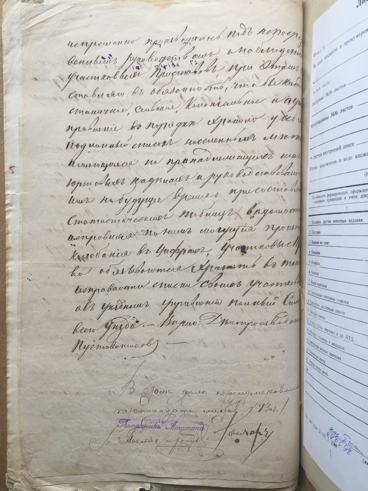
Продолжение официального документа о порядке ведения станичного делопроизводства: упоминаются станичное, сельское, волостное правление, порядок хранения подлинных списков наличных лиц, обязанности должностных лиц по представлению именных списков. Внизу — подпись: «Помощник Атамана... За Писаря...».
Курсив XIX века, частично неразборчив — передан по мере прочтения.
Лист 13
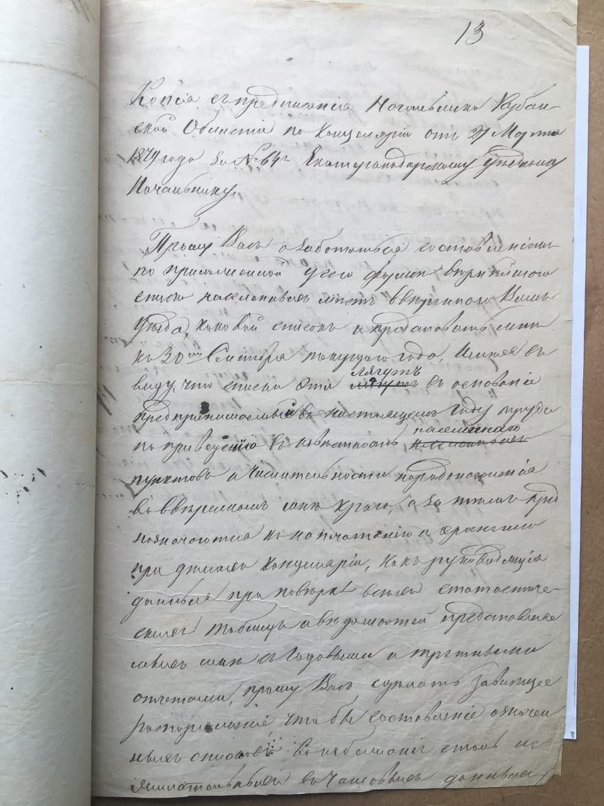
«Копия съ предписанія Начальника Кубанской Области по Канцеляріи отъ 27 Марта 1879 года за № 64. Екатеринодарскому уѣздному начальнику. Прошу Васъ озаботиться составленіемъ по прилагаемой у сего формѣ вѣрнаго списка населенныхъ мѣстъ ввѣреннаго Вамъ уѣзда, каковой списокъ и представить Его Превосходительству не позже 30-го Сентября текущаго года, имѣя въ виду что списокъ этотъ послужитъ въ основаніе предпринимаемаго въ наступающемъ году труда... прошу Васъ сдѣлать заявленное распоряженіе чтобы составленіе означенныхъ свѣдѣній имѣло мѣсто въ назначенный срокъ.»
Часть строк из-за плотного курсива читается предположительно.
лист не пронумерован (таблица)
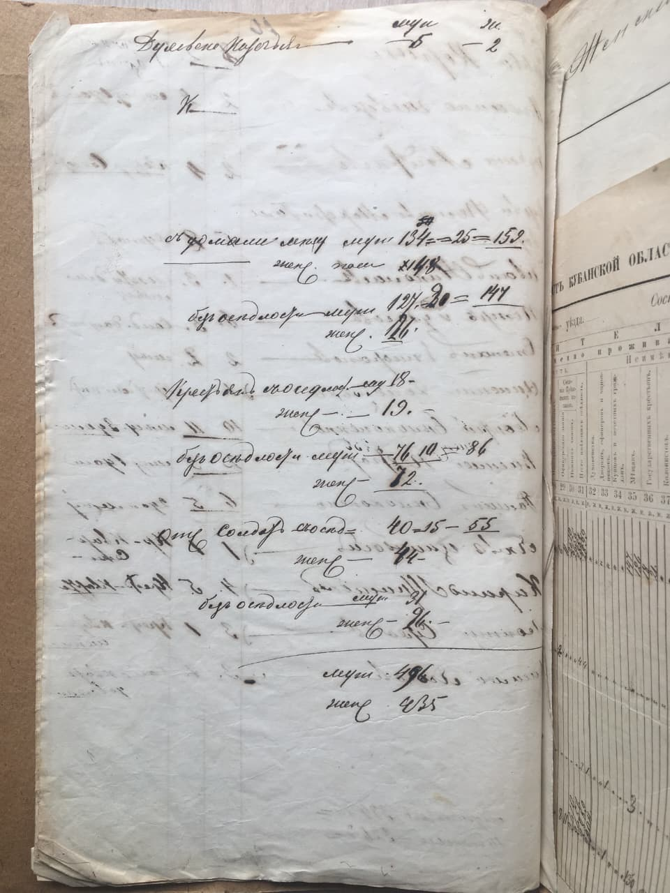
Сводная таблица по группам населения: «съ семьями муж. 134=25=159, жен. 148», «безсемейные муж. 127.20=147, жен. 26», «крестьянъ поселившихся муж. 18, жен. 19», «безсемейные муж. 76.10=86, жен. 72», «...солдатъ 40.15=55, жен. 44», «безсемейные муж. 31, жен. 26». Итого: муж. 496, жен. 435.
Лист 10
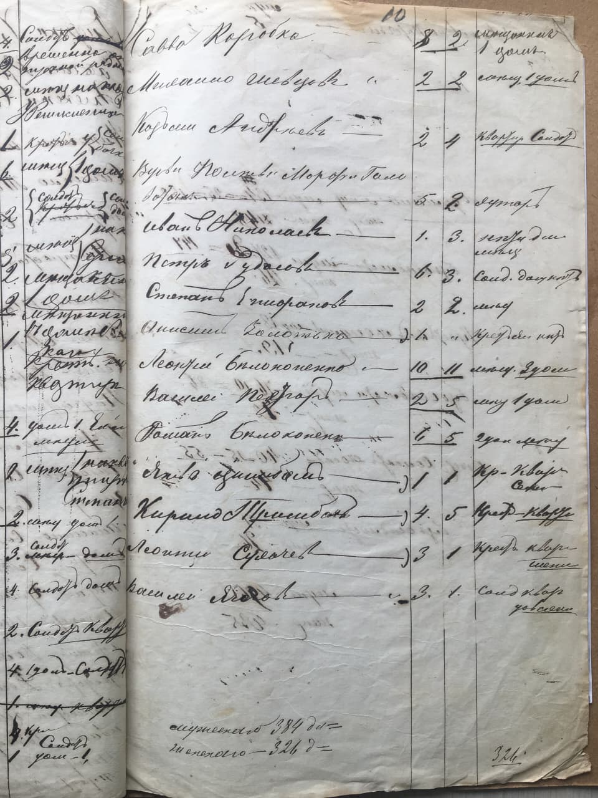
Посемейный список домохозяев, числа душ (муж./жен.) и категории проживания: Савва Коробка 8/2 (квартирант, 1 год), Милентий Шевцов 2/2 (солд.), Кордам Андреев 2/4, Иван Николаев 1/3 (крест.), Пётр Рудаков 6/3, Степан Сидоров 2/2 (мещ.), Онисим Золотько 1/–, Лаврентий Билоконенко 10/11 (мещ., 3 дома), Василий Подгорный 2/5, Роман Билоконенко 6/5 (2 дома), Данило Одинцов 1/1, Кирилл Прищепа 4/5, Леонтий Сурков 3/1, Василий Ягод 3/1. Итог по листу: муж. 384, жен. 326.
Плотная посемейная таблица — часть фамилий и цифр предположительна.
лист не пронумерован (продолжение)
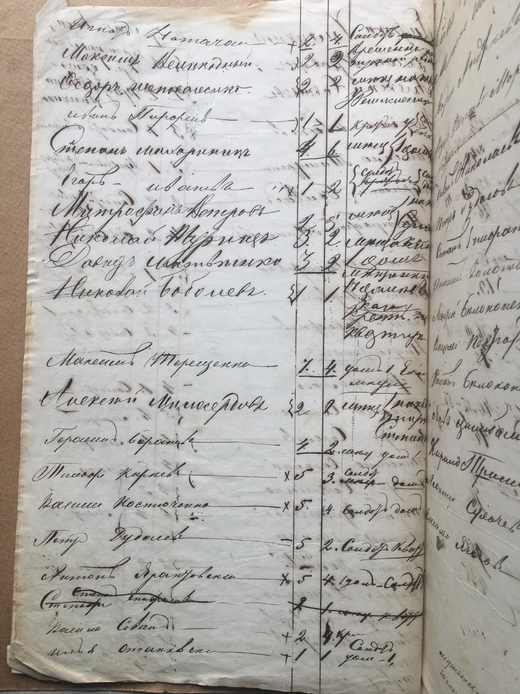
Продолжение посемейного списка: Игнат Наталуша 2/4 (солд.), Максим Великодний, Феодор Мироненко 2/2 (мещ.), Иван Пирогов 1/1 (крест.), Степан Полодарница 4/6 (мещ.), Игорь Иванов 1/2 (солд.), Митрофан Петров, Николай Журавлёв, Давид Наливайченко, Николай Соболев, Максим Терещенко 7/4, Алексей Милосердов 2/2, Герасим Боран 4/2, Тимофей Карпов, Василий Костюченко, Пётр Рудаков, Антон Храповицкий, Василий Собан, Отанивский.
Плотный курсив — часть фамилий и цифр предположительна.
лист не пронумерован (продолжение)
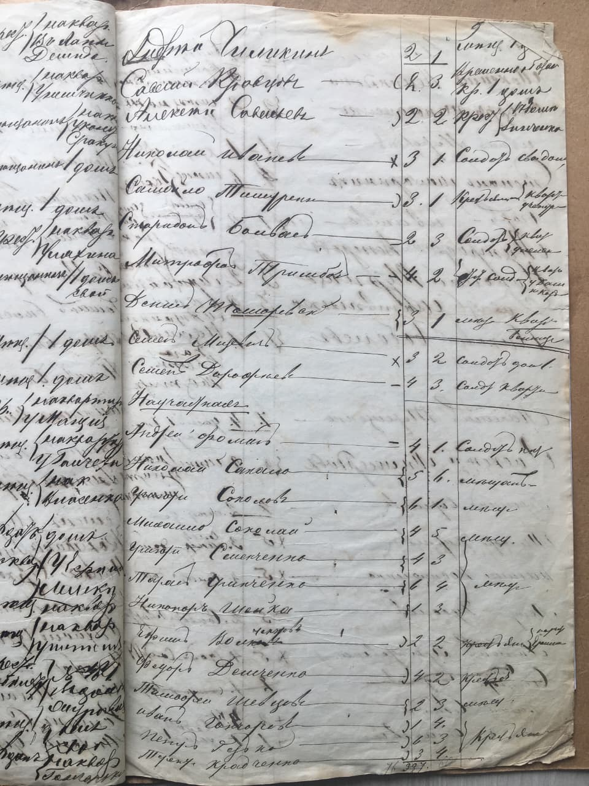
Продолжение: Дарья Химкина, Савелий Кравцов, Алексей Савельев 2/2 (крест.), Николай Иванов 3/1 (солд.), Самойло Тимченко 3/1, Спиридон Бондарев 2/3 (солд.), Митрофан Придыбок 4/2, Денис Пономарёв 3/1, Семён Михель, Семён Дорофеев. Далее раздел «Иногородние»: Андрей Еромлив, Григорий Соколов, Милентий Соколов, Григорий Семерченко, Тодор Франченко, Никифор Шевка, Феодор Демченко, Тимофей Шевцов, Иван Сахаров, Тереза Кравченко.
лист не пронумерован (продолжение, итог 75/62)
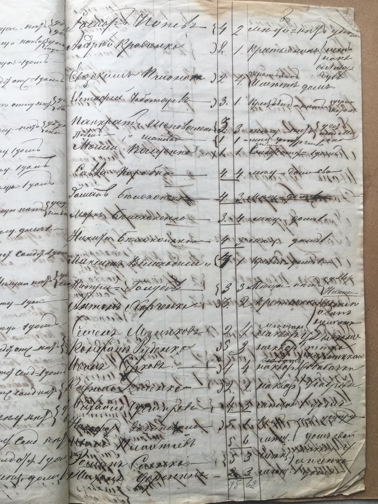
Иосиф Попов 4/2, Андрей Кравченко 3/1 (крест.), Ерофей Пилипенко 2/4, Митрофан Чеботарев 3/1, Панкрат Шеховцов 5/3, Федос Шевцов 1/1, Мосей Ковтуренко 1/1 (солдат), Савва Коробка 4/4, Даниил/Марко/Никифор Билоконенко (3–4 души каждый), Максим Великодный (солдат), Митрофан Голубов 3/3, Дмитрий Харченко 5/2 (крестьянин), Севастьян Мишихов, Кондрат Руденко, Карпо Диденко, Михайло Устименко, Иван Илларионов, Роман Свешников, Матвей Дорошенко.
Внизу листа общий подсчёт: 75 / 62 (муж./жен.).
лист не пронумерован (продолжение, итог 66/59)
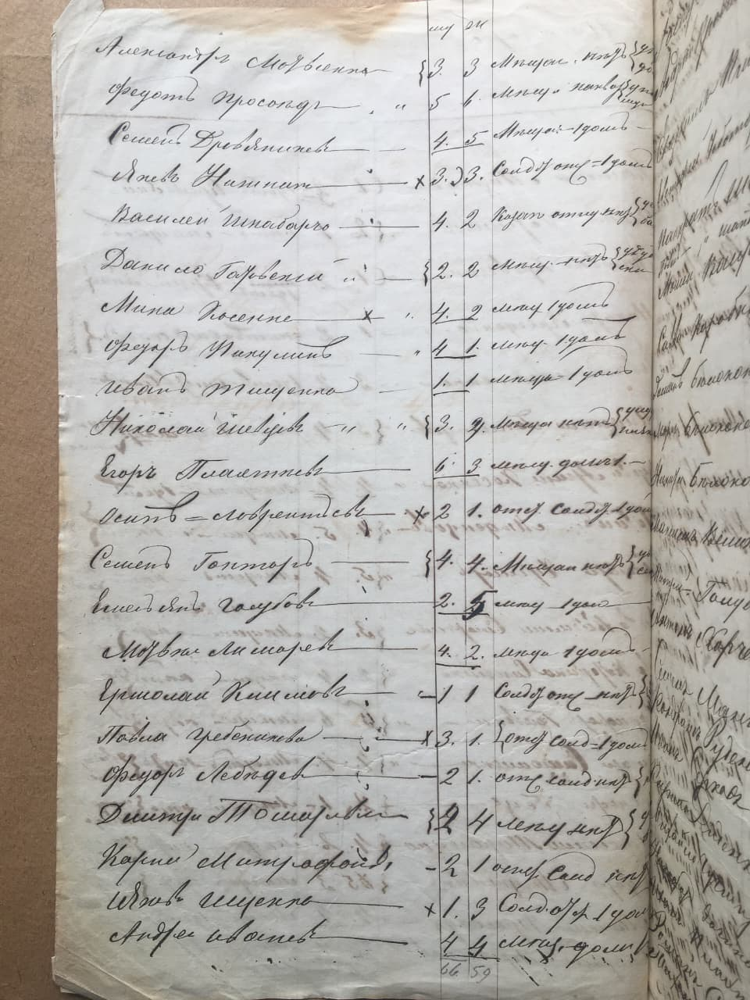
Александр Морковин 3/3 (мещ.), Федот Просол 5/1 (мещ.), Семён Дробязин 4/5, Яков Наливай 3/3 (солд.), Данило Гарькавый 2/2, Мина Лосенко, Феодор Панютин, Иван Тищенко, Николай Игнатьев, Егор Полетаев, Осип Лаврентьев, Семён Гонтарь, Емельян Голубов, Марко Лимарев, Ермолай Климов, Павел Гребенников, Феодор Лебедев, Дмитрий Пономарёв, Карп Митрофанов, Андрей Волынцев.
Внизу листа общий подсчёт: 66 / 59 (муж./жен.).
лист не пронумерован — раздел «Иногородние» (итог 56/51)
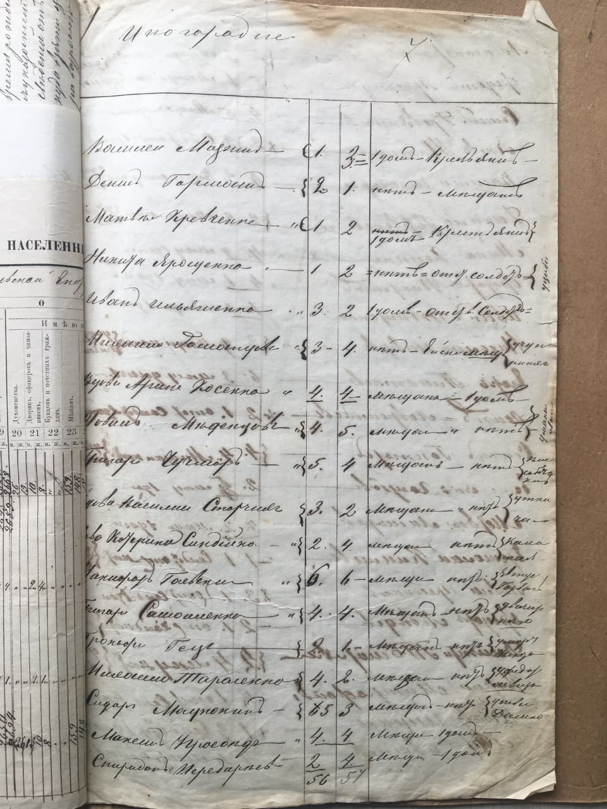
Заголовок «Иногородние». Василий Мазин, Денис Гарькавый, Матвей Кравченко, Никифор Ярошенко, Иван Ильенко (отставной солдат), Николай Досычев, Артём Косенко, Тобий Мифендов, Тигор Куклаев, Пелагея Старчик, Синицко, Захаров Гоевский, Тигор Романченко, Трофим Белый, Милентий Тараленко, Сидор Мазуркин, Максим Кузьмин, Спиридон Передерн.
Внизу листа общий подсчёт: 56 / 51 (муж./жен.).
лист не пронумерован (заключение раздела)
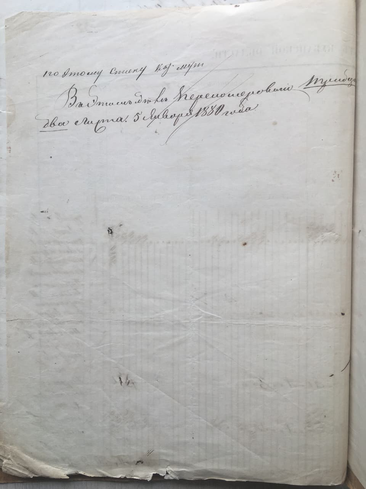
«По этому списку казач. муж... Всего было перенумеровано двое лица 5 января 1880 года.» Подписи неразборчивы. Далее — незаполненные листы.
Лист 11 (типографский бланк, № формы 32)
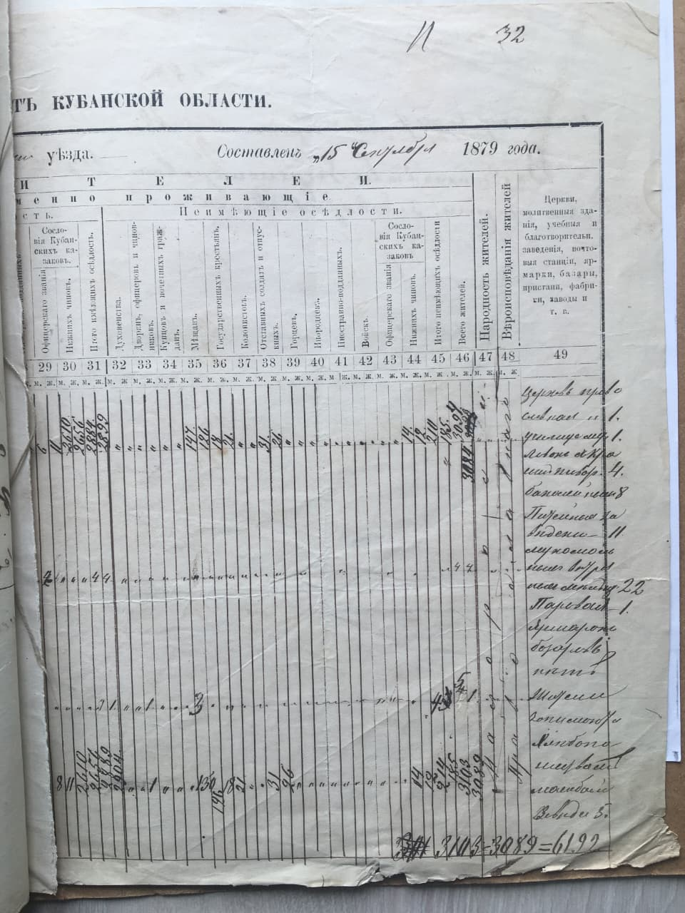
Верх типографского бланка «...ТЪ КУБАНСКОЙ ОБЛАСТИ», «Составленъ 15 Сентября 1879 года». Колонки 29–49: офицерского и нижнего звания, духовенство, дворяне/чиновники, купцы и почётные граждане, мещане, государственные крестьяне, казаки, отставные солдаты, горцы, иногородцы, войска, всего жителей, народность, вероисповедание, церкви/учебные и благотворительные заведения. Рукописная запись: «Церквей приходных 1, училищ 1, лавок и кладовых 14, базаров 8, кирпичных заводов 11, мукомольных (ветряных) мельниц 22...». Итог по листу: 3109–3089 = 6192.
Лист 12 — форма списка населённых мест
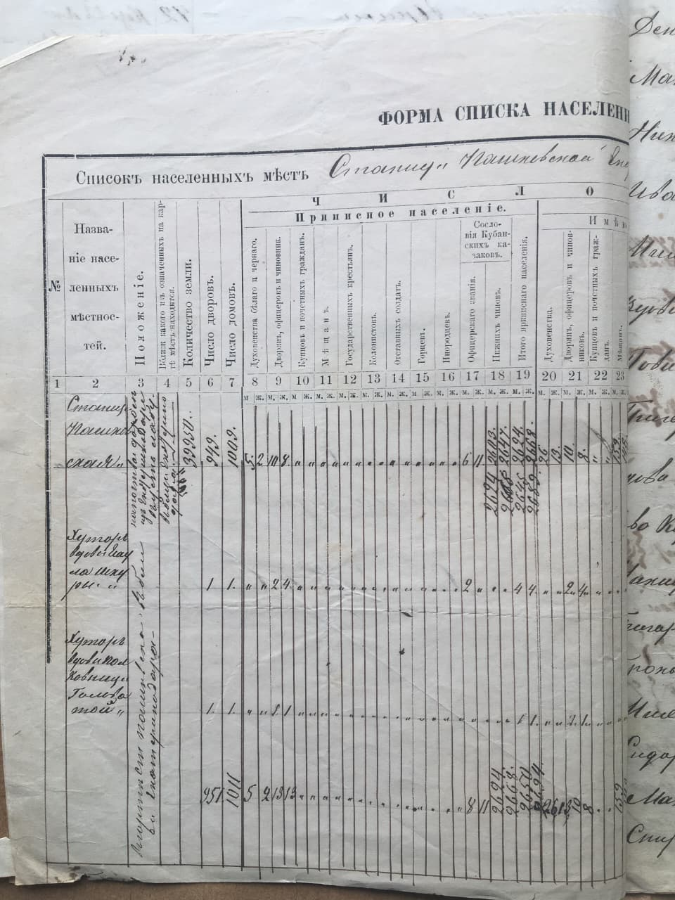
«Списокъ населенныхъ мѣстъ Станицы Пашковской...». Строка 1: «Станица Пашковская» — земли 39 950 дес., дворов 949, домов 1009. Строка 2: «Хутор рыболовный Мошки» — 18 дворов, 1 семья, 24 души. Строка 3: «Хутора Куликов, Ковницы, Головатой». Итого по всем пунктам: дворов 951, домов 1011; население — муж. 9694, жен. 9689 (ок.).
Лист 6
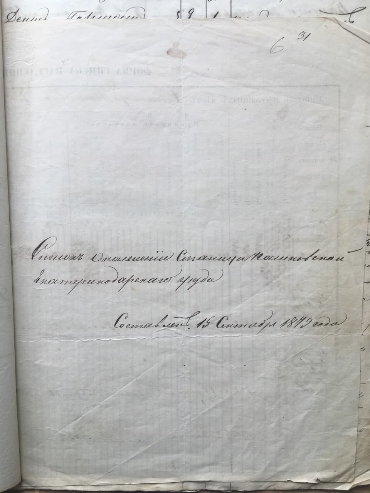
«Приложение [к] спискѣ станицы Пашковской Екатеринодарскаго уѣзда. Составленъ 15 Сентября 1879 года.»
лист не пронумерован — семейные записи (жёны и дочери)
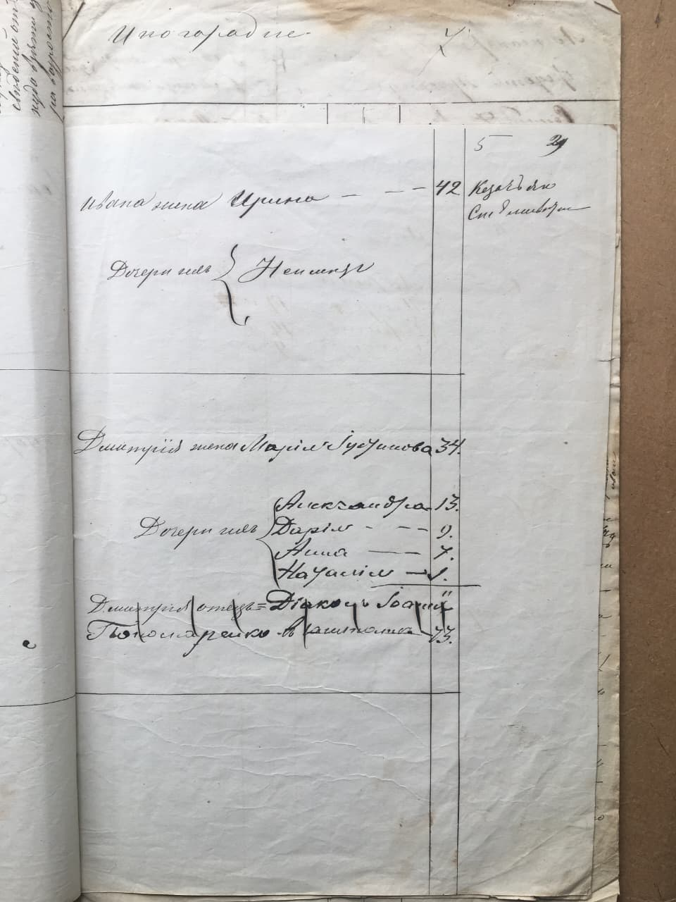
Раздел «Иногородние»: «Ивана жена Ирина — 42, Казачья слободка. Дочери его: Ненила...» «Дмитрий, жена Мария Кузьминова — 34. Дочери его: Александра 13, Дарья 9, Анна 7, Наталия 5.» «Дмитрия отец — дьякон Иоанн Токмаренко, вдовец, 75.»
лист не пронумерован — продолжение
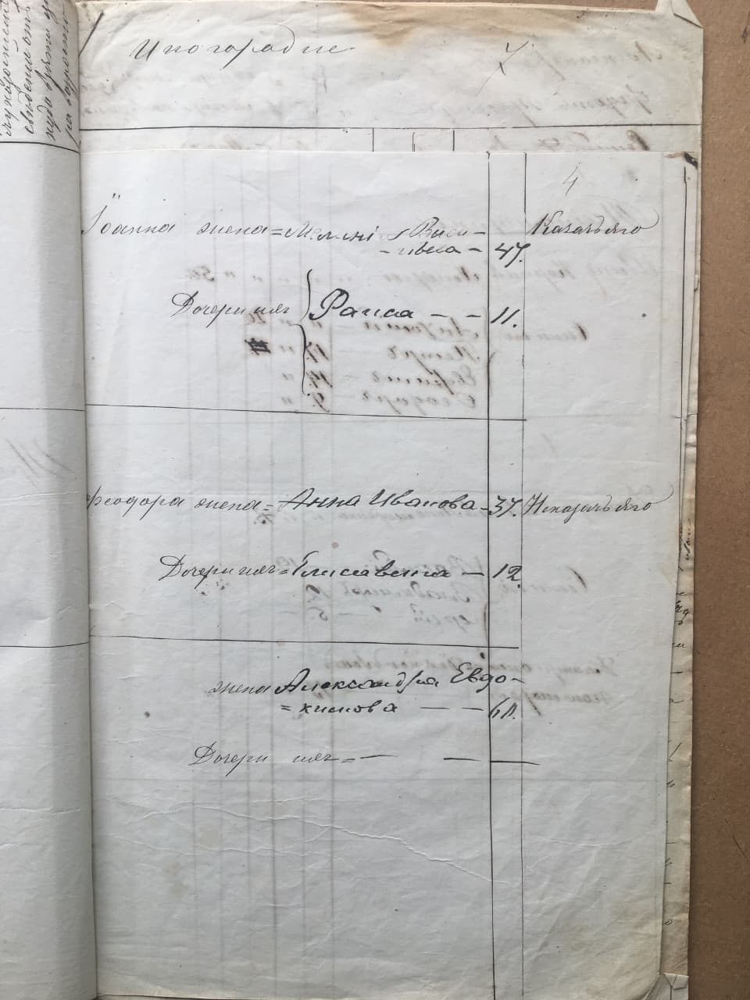
«Иоанна жена — Мелетия (Меланiя?) — 47, казачья. Дочь его: Раиса — 11.» «Феодора жена — Анна Иванова — 37, иногородняя. Дочь его: Елисавета — 19.» «Жена Александра Евдокимова — 60. Дочерей нет.»
лист не пронумерован — духовенство (посемейный список причта)
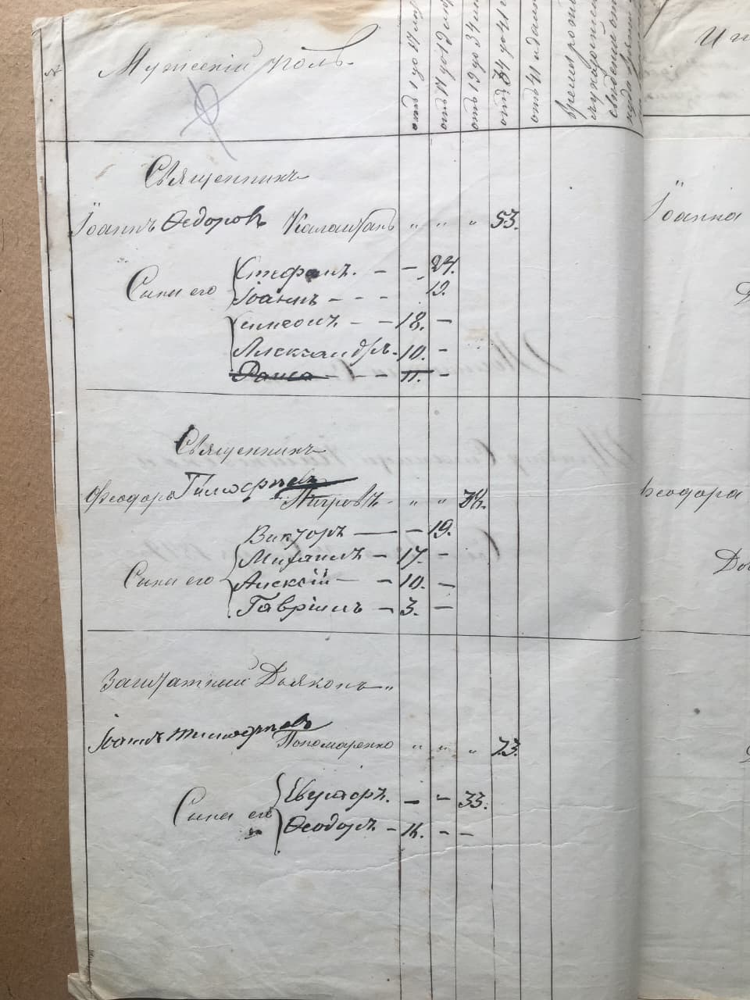
«Мужескій полъ.» Священник Иоанн Фёдоров Николашин — 53; сыновья: Стефан 27, Иоанн 19, Гавриил 18, Александр 10. Священник Феодор Тимофеев — 34; жена Виктория 19; сыновья: Михаил 17, Алексей 10, Гавриил 3. Заштатный дьякон Иоанн Тимофеев Пономаренко — 73; сыновья: Григорий 33, Феодор 14.
Лист 3 (заглавный)
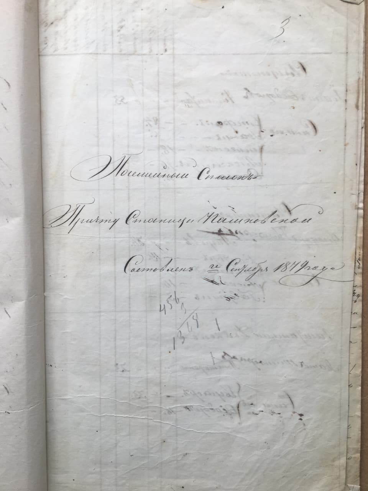
«Посемейный списокъ причту станицы Пашковской. Составленъ 15 Сентября 1879 года.»
Лист 2
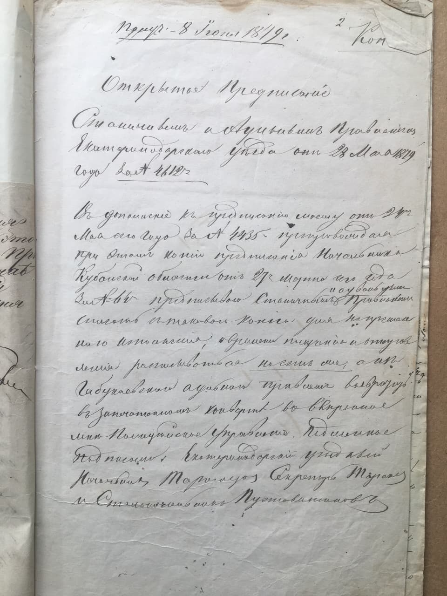
«Открытое предписаніе. Станичнымъ и Куреннымъ Правленіямъ Екатеринодарскаго уѣзда отъ 8 Iюня 1879 года за № 4412. Въ дополненіе къ предписанію моему отъ 2-го Мая сего года за № 4435 препровождается при этомъ копія предписанія Начальника Кубанской области отъ 27 Марта сего года за № 64... Подлинное подписалъ Екатеринодарскій уѣздный Начальникъ Тарасовъ. Скрѣпилъ Секретарь Тюренинъ и Столоначальникъ Пустовитовъ.»
лист не пронумерован — окончание предписания и подписи
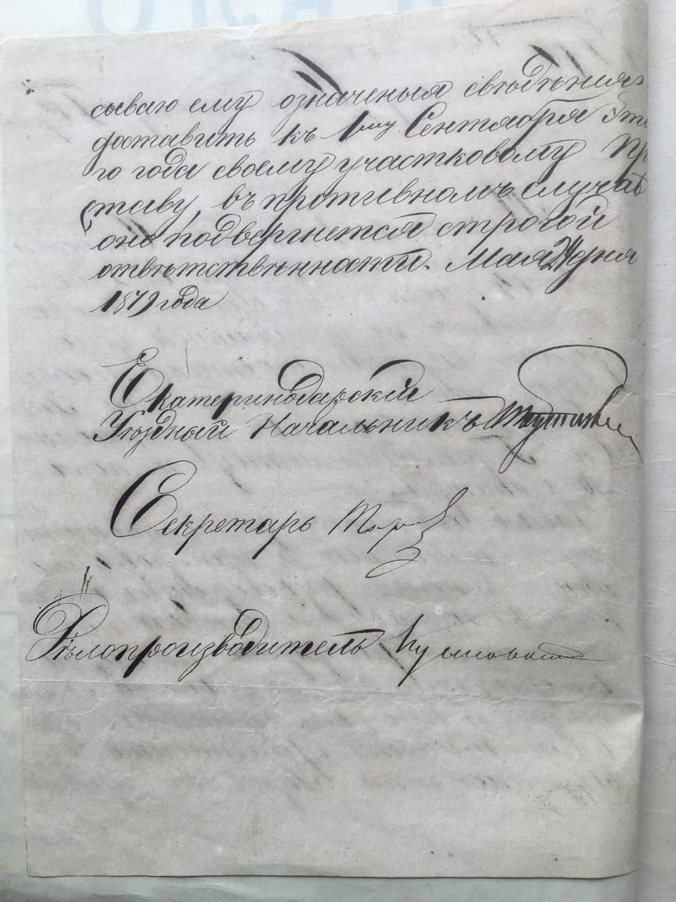
«...составивъ означенныя свѣдѣнія доставить къ 1-му Сентября сего года своему участковому Приставу, въ противномъ случаѣ онъ подвергнется строгой отвѣтственности. Екатеринодарскій Уѣздный Начальникъ Тарасовъ. Секретарь Тюренинъ. Дѣлопроизводитель Кулешовъ.»
№ 180
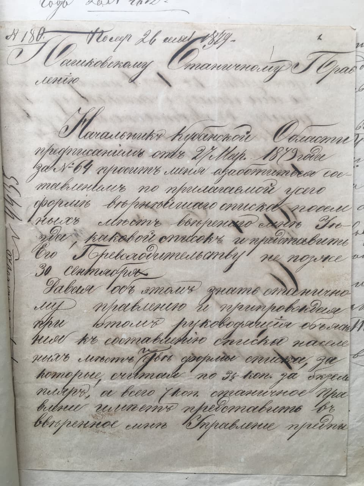
«№ 180. 26 Мая 1879. Пашковскому Станичному Правленію. Начальникъ Кубанской Области предписаніемъ отъ 27 Марта 1879 года за № 64 проситъ меня озаботиться составленіемъ по прилагаемой у сего формѣ вѣрнѣйшаго списка населенныхъ мѣстъ ввѣреннаго мнѣ уѣзда, каковой списокъ и представить Его Превосходительству не позже 30 Сентября...»
Лист 1 — обложка дела
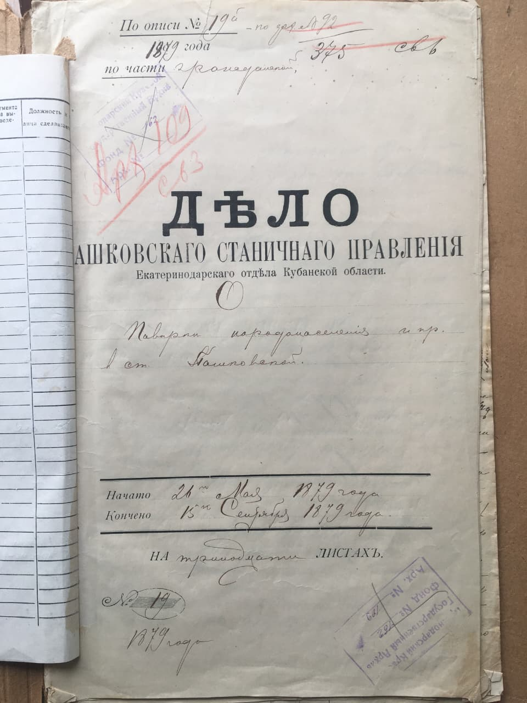
«ДѢЛО [П]АШКОВСКАГО СТАНИЧНАГО ПРАВЛЕНІЯ Екатеринодарскаго отдѣла Кубанской области. Обзоры народонаселенія и пр. по ст. Пашковой. Начато 26-го Мая 1879 года. Кончено 15-го Сентября 1879 года. На тринадцати листахъ. № 19, 1879 года.» Архивные штампы: «По описи № 19а — по дѣлу № 92, 1879 года», «Фондъ № 109».
обложка архивной папки (ГАКК)
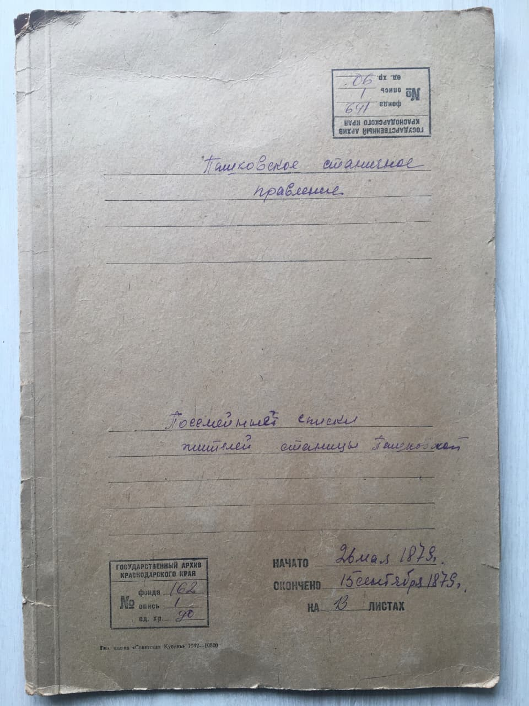
«ГОСУДАРСТВЕННЫЙ АРХИВ КРАСНОДАРСКОГО КРАЯ. Фонд 162, опись 1, ед. хр. 90. Пашковское станичное правленіе. Посемейные списки жителей станицы Пашковской. Начато 26 мая 1879. Окончено 15 сентября 1879. На 13 листах.»